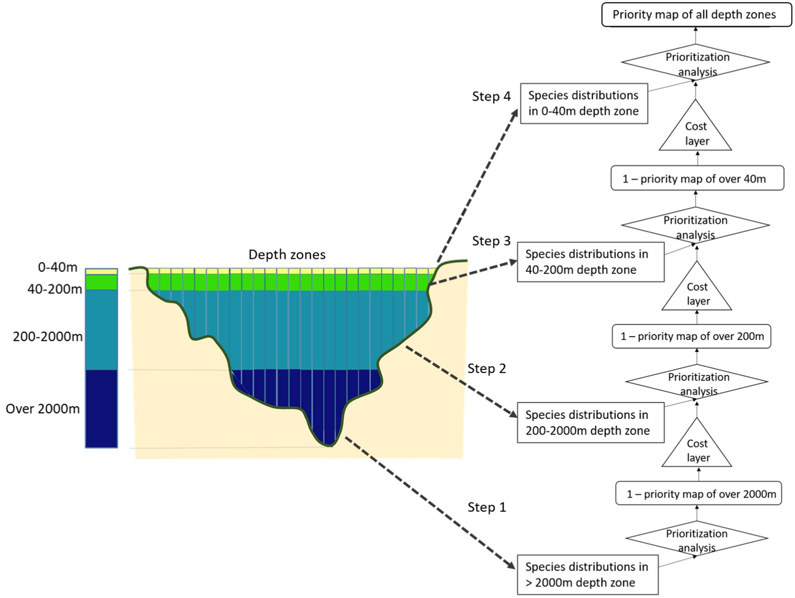

Introduction to prior3D
Aggeliki Doxa, Christos Adam, Nikolaos Nagkoulis, Antonios Mazaris, Stelios Katsanevakis
Source:vignettes/Introduction.Rmd
Introduction.RmdThis research was conducted at the Department of Marine Sciences, University of the Aegean, Greece, supported by the European Union’s Horizon 2020 research and innovation programme HORIZON-CL6–2021-BIODIV-01–12, under grant agreement No 101059407, “MarinePlan – Improved transdisciplinary science for effective ecosystem-based maritime spatial planning and conservation in European Seas”.
1 Introduction to the prior3D Package (tutorial)
The prior3D package offers a comprehensive toolset for 3D systematic conservation planning, conducting nested prioritization analyses across multiple depth levels and ensuring efficient resource allocation throughout the water column (Doxa et al. 2022). It provides a structured workflow designed to address biodiversity conservation and management challenges in the 3 dimensions, such as the incorporation of multiple costs at different depth levels, while facilitating users’ choices and parameterization. The process initiates from the deepest level and progressively moves toward the surface, by conducting a step-by-step prioritization analysis at each depth Figure 1. The optimization result at each depth level is considered as a cost layer for the layer above. This approach gives priority to areas chosen in deeper waters when selecting areas at the subsequent upper level, thus creating a cascading prioritization structure. The prior3D package is built upon the prioritizr package (Hanson et al. 2024), using commercial and open-source exact algorithm solvers that ensure optimal solutions to prioritization problems.

Figure 1: Flow chart of the 3D prioritization analysis for the four depth zones considered in the Doxa et al. (2022) analysis
This tutorial will guide you through the key functions of the package, from data preparation to generating informative outputs to address conservation challenges in diverse marine (and terrestrial) ecosystems and enable informed decision-making in biodiversity conservation, restoration and management.
2 Workflow: Running the analysis
The package provides two options for conducting analyses:
Running a Step-by-Step 3D SCP analysis
Running a Comparative Analysis of a 2D and a 3D SCP approach
When opting for the step-by-step analysis (first option), the workflow proceeds as follows:
Use the
split_rast()function to convert 2D distribution rasters of biodiversity features into a 3D format.Use the
prioritize_3D()function to set the optimization problem and define its parameters. This function also solves the problem and provides the solution in the form of a map.Use the
evaluate_3D()function to obtain detailed results in a tabular format.Use the
plot_3D()function to generate graphs based on the solution results.
When opting for a comparative analysis of a 2D and a 3D SCP approach
(second option), users can use the Compare_2D_3D()
function. This function incorporates the aforementioned detailed
workflow and applies it to both 2D and 3D approaches, streamlining and
simplifying the analysis process for users. By using this function,
users provide the input data, define the optimization problem and its
parameterization, run the analysis and finally obtain the results in the
form of maps, graphs and tables.
The spatial coherence of the solution maps can be evaluated through a post-processing analysis, which can be conducted after either the step-by-step or the comparative analysis. The necessary functions for this assessment are also provided within the package.
3 Illustration example
Let us consider the following dataset as an illustrative example. It represents a subset of the species analyzed in Doxa et al. (2022). For simplicity reasons, we have included only 20 species for demonstration purposes.
Biodiversity features
Two types of input data are needed for the biodiversity features.
Species information tables in tabular form (
data.frame). The firstdata.framecontains information about the features. If the biodiversity features concern species then this data.frame must indicate at least the species name and species classification as pelagic or benthic (mandatory). Additional optional data may include species assignment to prioritization groups and, if available, the species’ bathymetric range (min and max depth at which the species occurs). The seconddata.frameis a prioritization weights table, where users can assign specific weights to different prioritization groups. These groups can represent any meaningful categorization for the prioritization process, like taxonomical, functional, or conservation status categories, such as those defined by the IUCN.Biodiversity distribution data in 2D raster form. These rasters contain the information on the spatial distribution of the features across the study area. Biodiversity distribution information can represent either presence-absence data (binary) or any continuous information, such as biomass/abundance, probability of occurrences.
# Import prior3D R package
library(prior3D)
# Species information table
data(biodiv_df)
head(biodiv_df)
## species_name pelagic min_z max_z
## 1 acanthocybium_solandri 1 -20 0
## 2 acantholabrus_palloni 0 -500 -30
## 3 acanthomysis_longicornis 0 -100 -2
## 4 abraliopsis_morisii 0 -3660 0
## 5 abralia_veranyi 0 -900 -1
## 6 abraliopsis_pfefferi 0 -750 -1
# Biodiversity distribution data in 2D raster form
biodiv_raster <- get_biodiv_raster()
biodiv_raster
## class : SpatRaster
## dimensions : 31, 83, 20 (nrow, ncol, nlyr)
## resolution : 0.5, 0.5 (x, y)
## extent : -5.5, 36, 30.5, 46 (xmin, xmax, ymin, ymax)
## coord. ref. : lon/lat WGS 84 (EPSG:4326)
## source : biodiv_raster.tif
## names : aapto~aptos, abiet~etina, abra_alba, abral~ranyi, abral~risii, abral~fferi, ...
## min values : 0.01, 0.01, 0.01, 0.01, 0.01, 0.01, ...
## max values : 1.00, 0.63, 1.00, 1.00, 1.00, 1.00, ... Planning site, planning units and depth levels
In the illustration example, we consider as our planning site the Mediterranean Sea, with 0.5°x0.5° cells as our planning unites (PUs). We consider four depth levels: (i) 0 to 40 m (infralittoral zone, extending to the lower limit of photophilic algae and seagrasses), (ii) 40 to 200 m (circalittoral zone, continental shelf, animal-dominated), (iii) 200 to 2000 m (~continental slope), and (iv) exceeding 2000 m in depth (lower bathyal plains and abyssal zone) (Figure 2).

Figure 2: The study area and the considered depth zones
To conduct the analysis, a SpatRaster object containing bathymetric data for the planning site is needed. This raster should represent depths with negative values and match the extent and resolution of the biodiversity rasters. Alternatively, if bathymetry maps of greater resolution and broader extent are available, they can also be used, as the prior3D functions internally conduct cropping and resampling to match the biodiversity data. Producing the final depth raster that delineates the desired depth zones is also produced by the prior3D functions.
# Biodiversity distribution data in 2D raster form
depth_raster <- get_depth_raster()
depth_raster
## class : SpatRaster
## dimensions : 31, 83, 1 (nrow, ncol, nlyr)
## resolution : 0.5, 0.5 (x, y)
## extent : -5.5, 36, 30.5, 46 (xmin, xmax, ymin, ymax)
## coord. ref. : lon/lat WGS 84 (EPSG:4326)
## source : depth_raster.tif
## name : depth_raster
## min value : -4082.70312
## max value : -6.601914 Step-by-Step 3D SCP analysis
4.1 Step 1: Data Preparation
Transforming Biodiversity Distributions into Multilevel (3D) Data
The split_rast() function is used to convert 2D
distributions of biodiversity features (rasters) into a 3D format.
# Splitting features' 2D distributions into 3D ones
split_features <- split_rast(biodiv_raster,
depth_raster,
breaks = c(0, -40, -200, -2000, -Inf),
biodiv_df,
val_depth_range=TRUE)The output is a list containing species distributions for each bathymetric layer, necessary for the analysis next steps.
4.2 Step 2: 3D Prioritization Algorithm
The 3D prioritization algorithm is implemented using the
prioritize_3D() function, the core function of the
prior3D package. This function uses the list generated
from the split_rast() function and other necessary
inputs.
single_3D <- prioritize_3D(split_features = split_features,
depth_raster = depth_raster,
breaks = c(0, -40, -200, -2000, -Inf),
biodiv_df = biodiv_df,
budget_percents = 0.3,
budget_weights = "richness",
threads = parallel::detectCores(),
portfolio = "gap",
portfolio_opts = list(number_solutions = 10))
## Budget: 0.3Notes:
budget_percent: Contrarily to its strict economic
definition, budget reflects the desired level of protection to be
modeled. It ranges from 0 to 1, with 0 indicating no resources available
for protection, while 1 signifies resources sufficient to protect the
entire study area. Typically, setting a budget of 0.3 corresponds to the
30% conservation target (i.e. 30% of the total area set aside for
conservation). Users also have the flexibility to define multiple budget
levels using a vector, allowing for the exploration of various
protection scenarios. For instance, a vector like
c(0.1, 0.3, 0.5) represents three scenarios where 10%, 30%,
and 50% of the study area are designated for protection.
budget_weights: The prioritize_3D()
function allows users to specify how the budget is distributed among
depth levels. Three allocation methods are available:
Equal Distribution: Allocates an equal share of the budget to each depth level (
budget_weights ="equal").Proportional to Area: Allocates budget based on the spatial extent of each depth level (
budget_weights ="area").Proportional to Species Richness: Prioritizes budget allocation to depth levels with higher species diversity (number of species). (
budget_weights = "richness")
4.3 Step 3: Generating Outputs
Prioritization Maps
The prioritize_3D() function is used to generate
prioritization maps. Single budget settings (ex.
total_budget=0.3) produce standard maps, as typical Marxan
outputs. Multiple budgets, by using a vector (ex.
c(0.1,0.3,0.5), indicating available resources sufficient
to protect 10%, 30% and 50% of the area) result in cumulative maps,
illustrating areas selected by various budget levels. Although this
output follows a different approach, it resembles to typical Zonation
output maps.

Figure 3: Prioritization maps for single and multiple budget percentages
# Create plot of outputs for a single budget percentage
plot_3D(single_3D, to_plot="all")

Figure 4: Output for 30% budget percentage
And for multiple budgets
# Create plot of outputs for multiple budget percentages
multuple_3D <- prioritize_3D(split_features = split_features,
depth_raster = depth_raster,
breaks = c(0, -40, -200, -2000, -Inf),
biodiv_df = biodiv_df,
budget_percents = seq(0,1,0.1),
budget_weights = "richness",
threads = parallel::detectCores(),
portfolio = "gap",
portfolio_opts = list(number_solutions = 10))
## Budget: 0
## Warning: Portfolio could only find 1 out of 10 solutions.
## Warning: Portfolio could only find 1 out of 10 solutions.
## Warning: Portfolio could only find 1 out of 10 solutions.
## Warning: Portfolio could only find 1 out of 10 solutions.
## Budget: 0.1
## Budget: 0.2
## Budget: 0.3
## Budget: 0.4
## Budget: 0.5
## Budget: 0.6
## Budget: 0.7
## Budget: 0.8
## Budget: 0.9
## Budget: 1
## Warning: Problem failed presolve checks.
##
## These checks indicate that solutions might not identify meaningful priority
## areas:
##
## ✖ Budget is greater than the total cost of selecting all planning units.
## → Maybe you made a mistake when setting the `budget` in the objective function?
##
## ℹ For more information, see `presolve_check()`.
plot_3D(multuple_3D)
Figure 5: Output for multiple budget percentages
5 Comparative Analysis of a 2D and a 3D SCP approach
To facilitate comparisons between 3D and 2D approaches, the
compare_2D_3D() function is provided in the package. This
function enables users to conduct all the above mentioned steps of
analysis (data generation, setting and solving the optimization problem
and producing outputs), by executing both 2D and 3D approaches, with
similar settings, that facilitate comparisons. The function
plot_Compare_2D_3D() generates corresponding maps and
graphs for both approaches.
out_2D_3D <- Compare_2D_3D(biodiv_raster = biodiv_raster,
depth_raster = depth_raster,
breaks = c(0, -40, -200, -2000, -Inf),
biodiv_df = biodiv_df,
budget_percents = seq(0, 1, 0.1),
budget_weights = "richness",
threads = parallel::detectCores(),
portfolio = "gap", #"shuffle"
portfolio_opts = list(number_solutions = 10))
## Budget: 0
## Warning: Portfolio could only find 1 out of 10 solutions.
## Warning: Portfolio could only find 1 out of 10 solutions.
## Warning: Portfolio could only find 1 out of 10 solutions.
## Warning: Portfolio could only find 1 out of 10 solutions.
## Warning: Portfolio could only find 1 out of 10 solutions.
## Budget: 0.1
## Budget: 0.2
## Budget: 0.3
## Budget: 0.4
## Budget: 0.5
## Budget: 0.6
## Budget: 0.7
## Budget: 0.8
## Budget: 0.9
## Budget: 1
## Warning: Problem failed presolve checks.
##
## These checks indicate that solutions might not identify meaningful priority
## areas:
##
## ✖ Budget is greater than the total cost of selecting all planning units.
## → Maybe you made a mistake when setting the `budget` in the objective function?
##
## ℹ For more information, see `presolve_check()`.
## Warning: Problem failed presolve checks.
##
## These checks indicate that solutions might not identify meaningful priority
## areas:
##
## ✖ Budget is greater than the total cost of selecting all planning units.
## → Maybe you made a mistake when setting the `budget` in the objective function?
##
## ℹ For more information, see `presolve_check()`.
plot_Compare_2D_3D(out_2D_3D, to_plot="all", add_lines=TRUE)
Figure 6: Comparison of 2D vs 3D approach for multiple budget percentages
6 Spatial Coherence Metrics
The spatial coherence of the prioritization output (optimization solution) maps is assessed using three metrics: average surface roughness (SA), surface kurtosis (SKU), and the RAO index. These can be used for comparison among solution 2D and 3D solutions.
High SA values signify that there is a high spatial heterogeneity,
indicating lower spatial coherence. High SKU indicate high spatial
coherence. Both SA and SKU are calculated using R package
geodiv (Smith et al. 2023),
applying geodiv::focal_metrics functions “sa” and “sku” to
optimization solution rasters.
High RAO values suggest increased spatial heterogeneity, thus low
spatial coherence. To compute the RAO metric, a moving window approach
is employed on optimization solution maps, using function
rasterdiv::paRao from R package rasterdiv
(Rocchini, Thouverai, et al. 2021; Rocchini, Marcantonio, et al. 2021). The
dimensions of the window chosen is 3×3. The new raster, which is a
result of the application of the algorithm, is used to get an average
RAO value for the whole raster.
coherence(out_2D_3D, w=3)
## Progress metrics: 1 / 1
## Progress metrics: 1 / 1
## sa2D sa3D sa2Dw sa3Dw
## 3.806 3.503 2.413 2.118

Figure 7: SA
coherence(out_2D_3D, w=3, metric="sku")
## Progress metrics: 1 / 1
## Progress metrics: 1 / 1
## sku2D sku3D sku2Dw sku3Dw
## 0.347 1.138 -0.536 -0.374
Figure 8: SKU
coherence(out_2D_3D, w=3, metric="rao")
## 2D RAO
##
##
## Processing alpha: 1 Moving Window: 3
##
##
## Processing alpha: 1 Moving Window: 3
##
## [============================>----------------] 64% in 0s
## [============================>----------------] 65% in 0s
## [=============================>---------------] 66% in 0s
## [=============================>---------------] 67% in 0s
## [==============================>--------------] 69% in 0s
## [==============================>--------------] 70% in 0s
## [===============================>-------------] 71% in 0s
## [================================>------------] 72% in 0s
## [================================>------------] 73% in 0s
## [=================================>-----------] 75% in 0s
## [=================================>-----------] 76% in 0s
## [==================================>----------] 77% in 0s
## [==================================>----------] 78% in 0s
## [===================================>---------] 80% in 0s
## [===================================>---------] 81% in 0s
## [====================================>--------] 82% in 0s
## [====================================>--------] 83% in 0s
## [=====================================>-------] 84% in 0s
## [=====================================>-------] 86% in 0s
## [======================================>------] 87% in 0s
## [=======================================>-----] 88% in 0s
## [=======================================>-----] 89% in 0s
## [========================================>----] 90% in 0s
## [========================================>----] 92% in 0s
## [=========================================>---] 93% in 0s
## [=========================================>---] 94% in 0s
## [==========================================>--] 95% in 0s
## [==========================================>--] 96% in 0s
## [===========================================>-] 98% in 0s
## [===========================================>-] 99% in 0s
## [=============================================] 100% in 0s
##
## 3D RAO
##
##
## Processing alpha: 1 Moving Window: 3
##
##
## Processing alpha: 1 Moving Window: 3
##
## [=============================>---------------] 67% in 0s
## [==============================>--------------] 69% in 0s
## [==============================>--------------] 70% in 0s
## [===============================>-------------] 71% in 0s
## [================================>------------] 72% in 0s
## [================================>------------] 73% in 0s
## [=================================>-----------] 75% in 0s
## [=================================>-----------] 76% in 0s
## [==================================>----------] 77% in 0s
## [==================================>----------] 78% in 0s
## [===================================>---------] 80% in 0s
## [===================================>---------] 81% in 0s
## [====================================>--------] 82% in 0s
## [====================================>--------] 83% in 0s
## [=====================================>-------] 84% in 0s
## [=====================================>-------] 86% in 0s
## [======================================>------] 87% in 0s
## [=======================================>-----] 88% in 0s
## [=======================================>-----] 89% in 0s
## [========================================>----] 90% in 0s
## [========================================>----] 92% in 0s
## [=========================================>---] 93% in 0s
## [=========================================>---] 94% in 0s
## [==========================================>--] 95% in 0s
## [==========================================>--] 96% in 0s
## [===========================================>-] 98% in 0s
## [===========================================>-] 99% in 0s
## [=============================================] 100% in 0s
##
## $rao2D.mean
## [1] 1.872
##
## $rao3D.mean
## [1] 1.709
##
## Warning messages:
## 1: In rasterdiv::paRao(x = raster_data_2D, window = w, na.tolerance = 1, :
## Simplify=0. Rounding data to 0 decimal places.
## 2: In rasterdiv::paRao(x = raster_data_2D, window = w, na.tolerance = 1, :
## Input data are float numbers. Converting data to integer matrices.
## 3: In rasterdiv::paRao(x = raster_data_3D, window = w, na.tolerance = 1, :
## Simplify=0. Rounding data to 0 decimal places.
## 4: In rasterdiv::paRao(x = raster_data_3D, window = w, na.tolerance = 1, :
## Input data are float numbers. Converting data to integer matrices.

Figure 9: RAO
7 References
Doxa, Aggeliki, Vasiliki Almpanidou, Stelios Katsanevakis, Ana M Queirós, Kristin Kaschner, Cristina Garilao, Kathleen Kesner-Reyes, and Antonios D Mazaris. 2022. “4D marine conservation networks: Combining 3D prioritization of present and future biodiversity with climatic refugia. Global Change Biology 28 (15): 4577–88. https://doi.org/10.1111/gcb.16268.
Hanson, Jeffrey O, Richard Schuster, Nina Morrell, Matthew Strimas-Mackey, Brandon P M Edwards, Matthew E Watts, Peter Arcese, Joseph Bennett, and Hugh P Possingham. 2024. prioritizr: Systematic Conservation Prioritization in R. https://prioritizr.net.
Rocchini, Duccio, Matteo Marcantonio, Daniele Da Re, Giovanni Bacaro, Enrico Feoli, Giles Foody, Reinhard Furrer, et al. 2021. “From zero to infinity: Minimum to maximum diversity of the planet by spatio-parametric Rao’s quadratic entropy.Global Ecology and Biogeography 30 (5): 2315. https://doi.org/10.1111/geb.13270.
Rocchini, Duccio, Elisa Thouverai, Matteo Marcantonio, Martina Iannacito, Daniele Da Re, Michele Torresani, Giovanni Bacaro, et al. 2021. “ rasterdiv - An Information Theory tailored R package for measuring ecosystem heterogeneity from space: To the origin and back.” Methods in Ecology and Evolution 12 (6): 2195. https://doi.org/10.1111/2041-210X.13583.
Smith, Annie C., Phoebe Zarnetske, Kyla Dahlin, Adam Wilson, and Andrew Latimer. 2023. Geodiv: Methods for Calculating Gradient Surface Metrics. https://doi.org/10.32614/CRAN.package.geodiv.